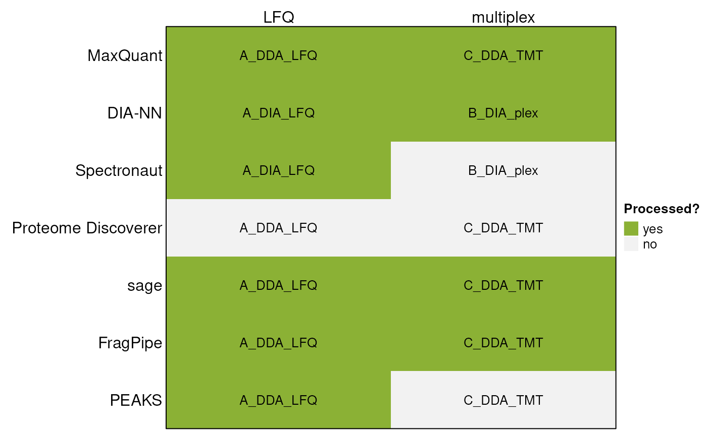

Supported input formats for readQFeatures()
Karolína Kryštofová
Laurent Gatto
3 May 2026
Source:vignettes/readQFeatures2.Rmd
readQFeatures2.RmdMethods
Datasets
This vignette demonstrates the use of the QFeatures
package’s readQFeatures() function to import data produced
by popular third-party software. For this purpose, subsets of the
following previously publicly available datasets have been used:
| Citation | PXD ID | Mode | Label | Code |
|---|---|---|---|---|
| Van Puyvelde et al., 2022 | PXD028735 | DIA | LFQ | A_DIA_LFQ |
| DDA | LFQ | A_DDA_LFQ | ||
| Derks et al., 2022 | PXD029531 | DIA | plexDIA | B_DIA_plex |
| Christoforou et al., 2016 | PXD001279 | DDA | TMT | C_DDA_TMT |
Specifically, these subsets consist of these files:
| Code | Original raw file name |
| A_DIA_LFQ | LFQ_timsTOFPro_diaPASEF_Condition_A_Sample_Alpha_01.d |
| LFQ_timsTOFPro_diaPASEF_Condition_A_Sample_Alpha_02.d | |
| LFQ_timsTOFPro_diaPASEF_Condition_A_Sample_Alpha_03.d | |
| LFQ_timsTOFPro_diaPASEF_Condition_B_Sample_Alpha_01.d | |
| LFQ_timsTOFPro_diaPASEF_Condition_B_Sample_Alpha_02.d | |
| LFQ_timsTOFPro_diaPASEF_Condition_B_Sample_Alpha_03.d | |
| A_DDA_LFQ | LFQ_Orbitrap_DDA_Condition_A_Sample_Alpha_01.raw |
| LFQ_Orbitrap_DDA_Condition_A_Sample_Alpha_02.raw | |
| LFQ_Orbitrap_DDA_Condition_A_Sample_Alpha_03.raw | |
| LFQ_Orbitrap_DDA_Condition_B_Sample_Alpha_01.raw | |
| LFQ_Orbitrap_DDA_Condition_B_Sample_Alpha_02.raw | |
| LFQ_Orbitrap_DDA_Condition_B_Sample_Alpha_03.raw | |
| B_DIA_plex | wJD803.raw |
| wJD804.raw | |
| wJD815.raw | |
| C_DDA_TMT | Replicate1_fraction1.raw |
| Replicate1_fraction2.raw |
Identifications and quantifications performed on these datasets were used in combination with the following software:

The data files are available in the MsDataHub package
(>= 1.11.5).
library("MsDataHub")
MsDataHub() |>
dplyr::filter(grepl("19137577", SourceUrl)) |>
dplyr::pull(Title)## [1] "Christoforou_2016_TMT_DDA_FragPipe_Fraction1_psm.tsv"
## [2] "Christoforou_2016_TMT_DDA_FragPipe_Fraction2_psm.tsv"
## [3] "Christoforou_2016_TMT_DDA_MaxQuant_evidence.txt"
## [4] "Christoforou_2016_TMT_DDA_sage_results.sage.tsv"
## [5] "Christoforou_2016_TMT_DDA_sage_tmt.tsv"
## [6] "Derks_2022_plex_DIA_DIANN_report_subset.tsv"
## [7] "vanPuyvelde_2022_LFQ_DDA_FragPipe_A_1_psm.tsv"
## [8] "vanPuyvelde_2022_LFQ_DDA_FragPipe_A_2_psm.tsv"
## [9] "vanPuyvelde_2022_LFQ_DDA_FragPipe_A_3_psm.tsv"
## [10] "vanPuyvelde_2022_LFQ_DDA_FragPipe_B_1_psm.tsv"
## [11] "vanPuyvelde_2022_LFQ_DDA_FragPipe_B_2_psm.tsv"
## [12] "vanPuyvelde_2022_LFQ_DDA_FragPipe_B_3_psm.tsv"
## [13] "vanPuyvelde_2022_LFQ_DDA_MaxQuant_evidence.txt"
## [14] "vanPuyvelde_2022_LFQ_DDA_MaxQuant_peptides.txt"
## [15] "vanPuyvelde_2022_LFQ_DDA_MaxQuant_proteinGroups.txt"
## [16] "vanPuyvelde_2022_LFQ_DDA_PEAKS_LFQ_report.csv"
## [17] "vanPuyvelde_2022_LFQ_DDA_sage_lfq.tsv"
## [18] "vanPuyvelde_2022_LFQ_DDA_sage_results.sage.tsv"
## [19] "vanPuyvelde_2022_LFQ_DIA_DIANN_report.parquet"
## [20] "vanPuyvelde_2022_LFQ_DIA_DIANN_report.tsv"Each file can be accessed with the function that has its name:
## see ?MsDataHub and browseVignettes('MsDataHub') for documentation## loading from cache## EH10423
## "/github/home/.cache/R/ExperimentHub/bef33233a7_10490"## see ?MsDataHub and browseVignettes('MsDataHub') for documentation
## loading from cache## EH10421
## "/github/home/.cache/R/ExperimentHub/bef44eed0c7_10488"and imported as a standard data.frame using the usual
read.*() functions (see below).
Existing search outputs
Example outputs for LFQ quantification using DIA-NN, Spectronaut and PEAKS were sourced from the ProteoBench website. IDs of these outputs on the ProteoBench website are as follows:
- DIA-NN:
- DIA-NN_20250714_074145 (.parquet output)
- DIA-NN_20250606_103313 (.tsv output)
- Spectronaut:
- Spectronaut_20250609_135453
- PEAKS:
- PEAKS_20250714_150458
As an example output for multiplex quantification using DIA-NN, a search result of the plexDIA dataset was sourced from the MassIVE repository (MSV000088302).
Introduction
Below, we describe individual outputs and their processing using the
readQFeatures() functions. When applicable, we demonstrate
how to read data on PSM, precursor, as well as protein group level.
For general explanation of the QFeatures class and
detailed description of individual arguments taken by the
readQFeatures() group of functions, consult the
readQFeatures() manual page of this vignette.
To initiate the session, we will load the QFeatures
package.
MaxQuant
MaxQuant produces several output .txt files. In order to
obtain information from several levels of the search, we can look at the
evidence.txt, peptides.txt and
proteinGroups.txt files.
Label-free
Here we will process the results of a multi-set label-free
experiment. First we will read the evidence.txt file
storing information about PSM-level data:
dataMaxquantLFQevidence <-
vanPuyvelde_2022_LFQ_DDA_MaxQuant_evidence.txt() |>
read.delim()
nrow(dataMaxquantLFQevidence)## [1] 1219We can now import the data.frame as a QFeatures object
using "Intensity" as quantitative column. This column the
quantitation values of all samples, acquired in different runs, as
defined in the "Experiment" column. We also rename the set
names, prefixing them with "psm_".
qfMaxquant <- readQFeatures(dataMaxquantLFQevidence,
quantCols = "Intensity",
runCol = "Experiment")## | | | 0% | |============ | 17% | |======================= | 33% | |=================================== | 50% | |=============================================== | 67% | |========================================================== | 83% | |======================================================================| 100%## An instance of class QFeatures (type: bulk) with 6 sets:
##
## [1] psm_A_Sample_Alpha_01: SummarizedExperiment with 224 rows and 1 columns
## [2] psm_A_Sample_Alpha_02: SummarizedExperiment with 227 rows and 1 columns
## [3] psm_A_Sample_Alpha_03: SummarizedExperiment with 222 rows and 1 columns
## [4] psm_B_Sample_Alpha_01: SummarizedExperiment with 185 rows and 1 columns
## [5] psm_B_Sample_Alpha_02: SummarizedExperiment with 172 rows and 1 columns
## [6] psm_B_Sample_Alpha_03: SummarizedExperiment with 189 rows and 1 columnsNext we will read the peptide-level results from a
peptides.txt file and append this to the
QFeatures object as a new assay:
dataMaxquantLFQpeptide <-
vanPuyvelde_2022_LFQ_DDA_MaxQuant_peptides.txt() |>
read.delim()
nrow(dataMaxquantLFQpeptide)## [1] 260This table is in a large format, meaning that the peptide
quantitation values of different samples are stored in different
columns. We thus get the indices of respective intensity columns,
starting with "Intensity.".
## [1] 53 54 55 56 57 58
colnames(dataMaxquantLFQpeptide)[i]## [1] "Intensity.A_Sample_Alpha_01" "Intensity.A_Sample_Alpha_02"
## [3] "Intensity.A_Sample_Alpha_03" "Intensity.B_Sample_Alpha_01"
## [5] "Intensity.B_Sample_Alpha_02" "Intensity.B_Sample_Alpha_03"We can read this peptide-level table as a new QFeatures
object using the same readQFeatures() as above. This time,
it will contain a single set with as many columns as there are
samples/acquisitions in the data.
readQFeatures(dataMaxquantLFQpeptide, quantCols = i, fnames = 'Sequence')## An instance of class QFeatures (type: bulk) with 1 set:
##
## [1] quants: SummarizedExperiment with 260 rows and 6 columnsIf we want to add the peptide-level data to our previously created
QFeatures object, we can read it as an invidual set (a
SummarizedExperiment instance) and add it with
addAssay()
pepSE <- readSummarizedExperiment(dataMaxquantLFQpeptide,
quantCols = i,
fnames = 'Sequence')
pepSE## class: SummarizedExperiment
## dim: 260 6
## metadata(0):
## assays(1): ''
## rownames(260): GAGSSEPVTGLDAK VEATFGVDESNAK ... VMALELGPHK
## VNAVNPTVVMTSMGQATWSDPHK
## rowData names(65): Sequence N.term.cleavage.window ... Mass.deficit
## MS.MS.Count
## colnames(6): Intensity.A_Sample_Alpha_01 Intensity.A_Sample_Alpha_02
## ... Intensity.B_Sample_Alpha_02 Intensity.B_Sample_Alpha_03
## colData names(0):
qfMaxquant <- addAssay(qfMaxquant,
pepSE,
name = 'peptides')
qfMaxquant## An instance of class QFeatures (type: bulk) with 7 sets:
##
## [1] psm_A_Sample_Alpha_01: SummarizedExperiment with 224 rows and 1 columns
## [2] psm_A_Sample_Alpha_02: SummarizedExperiment with 227 rows and 1 columns
## [3] psm_A_Sample_Alpha_03: SummarizedExperiment with 222 rows and 1 columns
## [4] psm_B_Sample_Alpha_01: SummarizedExperiment with 185 rows and 1 columns
## [5] psm_B_Sample_Alpha_02: SummarizedExperiment with 172 rows and 1 columns
## [6] psm_B_Sample_Alpha_03: SummarizedExperiment with 189 rows and 1 columns
## [7] peptides: SummarizedExperiment with 260 rows and 6 columnsWe see that a new assay has been appended to QFeatures
object.
Finally, we will append the protein group-level in the same manner.
Here we will use the "LFQ.intensity" columns:
dataMaxquantLFQprotein <-
vanPuyvelde_2022_LFQ_DDA_MaxQuant_proteinGroups.txt() |>
read.delim()
nrow(dataMaxquantLFQprotein)## [1] 40
## get indices of LFQ intensity columns
(i <- grep('LFQ.intensity.', colnames(dataMaxquantLFQprotein),
fixed = TRUE))## [1] 52 53 54 55 56 57
colnames(dataMaxquantLFQprotein)[i]## [1] "LFQ.intensity.A_Sample_Alpha_01" "LFQ.intensity.A_Sample_Alpha_02"
## [3] "LFQ.intensity.A_Sample_Alpha_03" "LFQ.intensity.B_Sample_Alpha_01"
## [5] "LFQ.intensity.B_Sample_Alpha_02" "LFQ.intensity.B_Sample_Alpha_03"
## load the data
protSE <- readSummarizedExperiment(dataMaxquantLFQprotein,
quantCols = i,
fnames = 'Protein.IDs')
protSE## class: SummarizedExperiment
## dim: 40 6
## metadata(0):
## assays(1): ''
## rownames(40): iRT-b-cRAP iRT-c-cRAP ... P07149 Q7Z4W1
## rowData names(73): Protein.IDs Majority.protein.IDs ... Taxonomy.IDs
## Taxonomy.names
## colnames(6): LFQ.intensity.A_Sample_Alpha_01
## LFQ.intensity.A_Sample_Alpha_02 ... LFQ.intensity.B_Sample_Alpha_02
## LFQ.intensity.B_Sample_Alpha_03
## colData names(0):
qfMaxquant <- addAssay(qfMaxquant,
protSE,
name = 'proteinGroups')
qfMaxquant## An instance of class QFeatures (type: bulk) with 8 sets:
##
## [1] psm_A_Sample_Alpha_01: SummarizedExperiment with 224 rows and 1 columns
## [2] psm_A_Sample_Alpha_02: SummarizedExperiment with 227 rows and 1 columns
## [3] psm_A_Sample_Alpha_03: SummarizedExperiment with 222 rows and 1 columns
## ...
## [6] psm_B_Sample_Alpha_03: SummarizedExperiment with 189 rows and 1 columns
## [7] peptides: SummarizedExperiment with 260 rows and 6 columns
## [8] proteinGroups: SummarizedExperiment with 40 rows and 6 columnsIt is important to highlight however that, while it is possible to
add PSM-, peptide- and protein-level sets one-by-one, as illustrated
above, we strongly recommend to compute the peptide-level data from the
PSM-level data, and the protein-level data from the peptide-level data
using the QFeatures::aggregateFeatures() function. The
function will record the link between features, PSM to peptide and
peptides to protein, and consistently apply filtering across these
levels. Alternatively, these links between sets can be re-computer with
the addAssayLink() function.
TMT
Below, we will demonstrate how to read data from a TMT-labeled experiment consisting of two runs:
dataMaxquantTMTevidence <-
Christoforou_2016_TMT_DDA_MaxQuant_evidence.txt() |>
read.delim()
(i <- grep('Reporter.intensity.\\d+', colnames(dataMaxquantTMTevidence)))## [1] 73 74 75 76 77 78 79 80 81 82
colnames(dataMaxquantTMTevidence)[i]## [1] "Reporter.intensity.1" "Reporter.intensity.2" "Reporter.intensity.3"
## [4] "Reporter.intensity.4" "Reporter.intensity.5" "Reporter.intensity.6"
## [7] "Reporter.intensity.7" "Reporter.intensity.8" "Reporter.intensity.9"
## [10] "Reporter.intensity.10"
qfMaxquantTMT <- readQFeatures(dataMaxquantTMTevidence,
quantCols = i,
runCol = 'Raw.file',
fnames = 'Sequence')## | | | 0% | |=================================== | 50% | |======================================================================| 100%## Warning in FUN(X[[i]], ...): Duplicated entries found in 'Sequence' in rowData
## of assay Replicate1_fraction1; they are made unique.## Warning in FUN(X[[i]], ...): Duplicated entries found in 'Sequence' in rowData
## of assay Replicate1_fraction2; they are made unique.
qfMaxquantTMT## An instance of class QFeatures (type: bulk) with 2 sets:
##
## [1] Replicate1_fraction1: SummarizedExperiment with 47 rows and 10 columns
## [2] Replicate1_fraction2: SummarizedExperiment with 77 rows and 10 columnsWe see that a separate experiment has been created for each run with 10 columns corresponding to the 10 TMT channels.
DIA-NN
Label-free
DIA-NN versions 1.9.0 and below produce a main .tsv search result file, which has been replaced by a .parquet file from version 2.0.0 up solely .
DIA-NN .tsv reports can be read using the
readQFeaturesFromDIANN() function:
qfDiannLFQ <-
vanPuyvelde_2022_LFQ_DIA_DIANN_report.tsv() |>
read.delim() |>
readQFeaturesFromDIANN(runCol = 'Run')## | | | 0% | |============ | 17% | |======================= | 33% | |=================================== | 50% | |=============================================== | 67% | |========================================================== | 83% | |======================================================================| 100%
qfDiannLFQ## An instance of class QFeatures (type: bulk) with 6 sets:
##
## [1] ttSCP_diaPASEF_Condition_A_Sample_Alpha_01_11494: SummarizedExperiment with 393 rows and 1 columns
## [2] ttSCP_diaPASEF_Condition_A_Sample_Alpha_02_11500: SummarizedExperiment with 394 rows and 1 columns
## [3] ttSCP_diaPASEF_Condition_A_Sample_Alpha_03_11506: SummarizedExperiment with 391 rows and 1 columns
## [4] ttSCP_diaPASEF_Condition_B_Sample_Alpha_01_11496: SummarizedExperiment with 382 rows and 1 columns
## [5] ttSCP_diaPASEF_Condition_B_Sample_Alpha_02_11502: SummarizedExperiment with 378 rows and 1 columns
## [6] ttSCP_diaPASEF_Condition_B_Sample_Alpha_03_11508: SummarizedExperiment with 381 rows and 1 columnsIn order to read a .parquet file in R, we need to use the
arrow package, that provides an interface to the Arrow C++
library. After reading this file however, we can work with the resulting
data.frame in the same manner as we are used to in case of the
.tsv report.
qfDiannParquet <-
vanPuyvelde_2022_LFQ_DIA_DIANN_report.parquet() |>
arrow::read_parquet() |>
readQFeaturesFromDIANN(runCol = 'Run')## | | | 0% | |============ | 17% | |======================= | 33% | |=================================== | 50% | |=============================================== | 67% | |========================================================== | 83% | |======================================================================| 100%
qfDiannParquet## An instance of class QFeatures (type: bulk) with 6 sets:
##
## [1] ttSCP_diaPASEF_Condition_A_Sample_Alpha_01_11494: SummarizedExperiment with 422 rows and 1 columns
## [2] ttSCP_diaPASEF_Condition_A_Sample_Alpha_02_11500: SummarizedExperiment with 426 rows and 1 columns
## [3] ttSCP_diaPASEF_Condition_A_Sample_Alpha_03_11506: SummarizedExperiment with 422 rows and 1 columns
## [4] ttSCP_diaPASEF_Condition_B_Sample_Alpha_01_11496: SummarizedExperiment with 408 rows and 1 columns
## [5] ttSCP_diaPASEF_Condition_B_Sample_Alpha_02_11502: SummarizedExperiment with 409 rows and 1 columns
## [6] ttSCP_diaPASEF_Condition_B_Sample_Alpha_03_11508: SummarizedExperiment with 416 rows and 1 columnsAs you can see, both experiments consist of the same run names as
both searches have been performed on the same set of raw data. The
numbers of rows in each SummarizedExperiment however differ
between those two reports, as both searches have been performed using
different software versions, as well as different search parameters.
plexDIA
To correctly parse a plexDIA experiment, it is necessary to set the
multiplexing parameter to "mTRAQ":
qfDiannPlex <-
Derks_2022_plex_DIA_DIANN_report_subset.tsv() |>
read.delim() |>
readQFeaturesFromDIANN(runCol = 'Run',
multiplexing = 'mTRAQ')## | | | 0% | |======================= | 33% | |=============================================== | 67% | |======================================================================| 100%
qfDiannPlex## An instance of class QFeatures (type: bulk) with 3 sets:
##
## [1] eJD905: SummarizedExperiment with 65 rows and 3 columns
## [2] eJD906: SummarizedExperiment with 66 rows and 3 columns
## [3] eJD907: SummarizedExperiment with 75 rows and 3 columnsThe run names in this output file are not the most informative with regards to the samples. We will now edit the sample metadata to contain more meaningful sample annotation. All runs were performed on the same sample, in 3 technical replicates:
qfDiannPlex$sample <- 'mixed standard'
qfDiannPlex$rep <- rep(1:3, each = 3)
qfDiannPlex$label <- paste0('mTraq d', rep(c(0, 4, 8), times = 3))
colData(qfDiannPlex)## DataFrame with 9 rows and 3 columns
## sample rep label
## <character> <integer> <character>
## eJD905_0 mixed stan... 1 mTraq d0
## eJD905_4 mixed stan... 1 mTraq d4
## eJD905_8 mixed stan... 1 mTraq d8
## eJD906_0 mixed stan... 2 mTraq d0
## eJD906_4 mixed stan... 2 mTraq d4
## eJD906_8 mixed stan... 2 mTraq d8
## eJD907_0 mixed stan... 3 mTraq d0
## eJD907_4 mixed stan... 3 mTraq d4
## eJD907_8 mixed stan... 3 mTraq d8sage
The sage search engine stores quantification data either in the lfq.tsv or tmt.tsv file based on the quantification used.
As above for label-free quantification, the lfq.tsv file contains estimated quantities of identified peptidoforms and is grouped on modified sequence level:
dataSageLFQ <-
vanPuyvelde_2022_LFQ_DDA_sage_lfq.tsv() |>
read.delim()
(i <- grep('.mzML', colnames(dataSageLFQ), fixed = TRUE))## [1] 7 8 9 10 11 12
colnames(dataSageLFQ)[i]## [1] "LFQ_Orbitrap_DDA_Condition_A_Sample_Alpha_01.mzML"
## [2] "LFQ_Orbitrap_DDA_Condition_A_Sample_Alpha_02.mzML"
## [3] "LFQ_Orbitrap_DDA_Condition_A_Sample_Alpha_03.mzML"
## [4] "LFQ_Orbitrap_DDA_Condition_B_Sample_Alpha_01.mzML"
## [5] "LFQ_Orbitrap_DDA_Condition_B_Sample_Alpha_02.mzML"
## [6] "LFQ_Orbitrap_DDA_Condition_B_Sample_Alpha_03.mzML"
qfSageLFQ <- readQFeatures(dataSageLFQ,
quantCols = i,
name = 'peptides')
qfSageLFQ## An instance of class QFeatures (type: bulk) with 1 set:
##
## [1] peptides: SummarizedExperiment with 336 rows and 6 columnsAs for TMT-based quantification, the PSM-level quantification is included in the tmt.tsv file.
dataSageTMT <-
Christoforou_2016_TMT_DDA_sage_tmt.tsv() |>
read.delim()Upon inspection, we can see that peptide identification information is missing in this file:
colnames(dataSageTMT)## [1] "filename" "scannr" "ion_injection_time"
## [4] "tmt_1" "tmt_2" "tmt_3"
## [7] "tmt_4" "tmt_5" "tmt_6"
## [10] "tmt_7" "tmt_8" "tmt_9"
## [13] "tmt_10"We can source this from the main results.sage.tsv file and append
this information to the quantification data frame. We also extract the
indices of the quantification columns before loading the data using the
readQFeatures() function.
dataSageTMTident <-
Christoforou_2016_TMT_DDA_sage_results.sage.tsv() |>
read.delim()
dataSageTMTfinal <- merge(dataSageTMT, dataSageTMTident, by = c('filename', 'scannr'))
(i <- grep('tmt_', colnames(dataSageTMTfinal), fixed = TRUE))## [1] 4 5 6 7 8 9 10 11 12 13
colnames(dataSageTMTfinal)[i]## [1] "tmt_1" "tmt_2" "tmt_3" "tmt_4" "tmt_5" "tmt_6" "tmt_7" "tmt_8"
## [9] "tmt_9" "tmt_10"
qfSageTMT <- readQFeatures(dataSageTMTfinal, quantCols = i)
qfSageTMT## An instance of class QFeatures (type: bulk) with 1 set:
##
## [1] quants: SummarizedExperiment with 251 rows and 10 columnsA more straightforward way is to use the
sager::sageQFeatures() function from the
BiocStyle::Githubpkg(“UCLouvain-CBIO/sager”) package to quickly load TMT
quantification data from both .tsv output files into a
QFeatures object.
sager::sageQFeatures(
Christoforou_2016_TMT_DDA_sage_tmt.tsv(),
Christoforou_2016_TMT_DDA_sage_results.sage.tsv())FragPipe
FragPipe produces several outputs. The following code block shows the processing of a label-free multi-set experiment.
First we can load the psm.tsv files that are produced separately for each sample-biological replicate combination as specified during FragPipe configuration. In our case, there has been a separate file created for each run.
We start by extracting the relevant filenames from
MsDataHub.
## [1] "vanPuyvelde_2022_LFQ_DDA_FragPipe_A_1_psm.tsv"
## [2] "vanPuyvelde_2022_LFQ_DDA_FragPipe_A_2_psm.tsv"
## [3] "vanPuyvelde_2022_LFQ_DDA_FragPipe_A_3_psm.tsv"
## [4] "vanPuyvelde_2022_LFQ_DDA_FragPipe_B_1_psm.tsv"
## [5] "vanPuyvelde_2022_LFQ_DDA_FragPipe_B_2_psm.tsv"
## [6] "vanPuyvelde_2022_LFQ_DDA_FragPipe_B_3_psm.tsv"Below, we iterate over each filename, convert it to a function call
that we then evaluate, and then load as a
SummarizedExperiment. The code below produces a list of
SummarizedExperiment instances, that we then name using the
initial filenames.
lst <- lapply(fls, function(fl) {
call(fl) |>
eval() |>
read.delim() |>
readSummarizedExperiment(quantCols = "Intensity")
})
names(lst) <- flsWe can now pass this list to the QFeatures constructor
to create a QFeatures object.
qfFpipeLFQ <- QFeatures(lst)
qfFpipeLFQ## An instance of class QFeatures (type: bulk) with 6 sets:
##
## [1] vanPuyvelde_2022_LFQ_DDA_FragPipe_A_1_psm.tsv: SummarizedExperiment with 385 rows and 1 columns
## [2] vanPuyvelde_2022_LFQ_DDA_FragPipe_A_2_psm.tsv: SummarizedExperiment with 392 rows and 1 columns
## [3] vanPuyvelde_2022_LFQ_DDA_FragPipe_A_3_psm.tsv: SummarizedExperiment with 452 rows and 1 columns
## [4] vanPuyvelde_2022_LFQ_DDA_FragPipe_B_1_psm.tsv: SummarizedExperiment with 360 rows and 1 columns
## [5] vanPuyvelde_2022_LFQ_DDA_FragPipe_B_2_psm.tsv: SummarizedExperiment with 356 rows and 1 columns
## [6] vanPuyvelde_2022_LFQ_DDA_FragPipe_B_3_psm.tsv: SummarizedExperiment with 379 rows and 1 columnsThe names of the assays are based on the (rather long) filenames, they were derived from. We can shorten these:
names(qfFpipeLFQ) <- sub('vanPuyvelde_2022_LFQ_DDA_FragPipe_(\\w_\\d_psm)\\.tsv', '\\1', names(qfFpipeLFQ))
qfFpipeLFQ## An instance of class QFeatures (type: bulk) with 6 sets:
##
## [1] A_1_psm: SummarizedExperiment with 385 rows and 1 columns
## [2] A_2_psm: SummarizedExperiment with 392 rows and 1 columns
## [3] A_3_psm: SummarizedExperiment with 452 rows and 1 columns
## [4] B_1_psm: SummarizedExperiment with 360 rows and 1 columns
## [5] B_2_psm: SummarizedExperiment with 356 rows and 1 columns
## [6] B_3_psm: SummarizedExperiment with 379 rows and 1 columnsThe processing of peptide and protein-level outputs is similar to MaxQuant processing above.
TMT
In the following section, we demonstrate the processing of TMT-labelled multi-set experiment. It consists of two runs named Fraction1 and Fraction2. Just like in the case of a label-free experiment, there is a separate psm.tsv file produced for each run:
fls <- MsDataHub() |>
dplyr::filter(grepl("Christoforou_2016_TMT_DDA_FragPipe_Fraction", Title)) |>
dplyr::pull(1)
lst <- lapply(fls,
function(fl) {
x <- eval(call(fl)) |>
read.delim()
i <- grep('Intensity\\.', colnames(x))
readSummarizedExperiment(x, quantCols = i)
})
names(lst) <- fls
QFeatures(lst)## An instance of class QFeatures (type: bulk) with 2 sets:
##
## [1] Christoforou_2016_TMT_DDA_FragPipe_Fraction1_psm.tsv: SummarizedExperiment with 134 rows and 10 columns
## [2] Christoforou_2016_TMT_DDA_FragPipe_Fraction2_psm.tsv: SummarizedExperiment with 166 rows and 10 columnsSession information
R version 4.6.0 (2026-04-24)
Platform: x86_64-pc-linux-gnu
Running under: Ubuntu 24.04.4 LTS
Matrix products: default
BLAS: /usr/lib/x86_64-linux-gnu/openblas-pthread/libblas.so.3
LAPACK: /usr/lib/x86_64-linux-gnu/openblas-pthread/libopenblasp-r0.3.26.so; LAPACK version 3.12.0
locale:
[1] LC_CTYPE=en_US.UTF-8 LC_NUMERIC=C
[3] LC_TIME=en_US.UTF-8 LC_COLLATE=en_US.UTF-8
[5] LC_MONETARY=en_US.UTF-8 LC_MESSAGES=en_US.UTF-8
[7] LC_PAPER=en_US.UTF-8 LC_NAME=C
[9] LC_ADDRESS=C LC_TELEPHONE=C
[11] LC_MEASUREMENT=en_US.UTF-8 LC_IDENTIFICATION=C
time zone: UTC
tzcode source: system (glibc)
attached base packages:
[1] stats4 grid stats graphics grDevices utils datasets
[8] methods base
other attached packages:
[1] QFeatures_1.23.1 MultiAssayExperiment_1.38.0
[3] SummarizedExperiment_1.42.0 Biobase_2.72.0
[5] GenomicRanges_1.64.0 Seqinfo_1.2.0
[7] IRanges_2.46.0 S4Vectors_0.50.0
[9] BiocGenerics_0.58.0 generics_0.1.4
[11] MatrixGenerics_1.24.0 matrixStats_1.5.0
[13] MsDataHub_1.12.0 ComplexHeatmap_2.28.0
[15] BiocStyle_2.40.0
loaded via a namespace (and not attached):
[1] DBI_1.3.0 httr2_1.2.2 rlang_1.2.0
[4] magrittr_2.0.5 clue_0.3-68 GetoptLong_1.1.1
[7] otel_0.2.0 compiler_4.6.0 RSQLite_2.4.6
[10] reshape2_1.4.5 png_0.1-9 systemfonts_1.3.2
[13] vctrs_0.7.3 stringr_1.6.0 ProtGenerics_1.44.0
[16] pkgconfig_2.0.3 shape_1.4.6.1 crayon_1.5.3
[19] fastmap_1.2.0 dbplyr_2.5.2 magick_2.9.1
[22] XVector_0.52.0 rmarkdown_2.31 ragg_1.5.2
[25] purrr_1.2.2 bit_4.6.0 xfun_0.57
[28] cachem_1.1.0 jsonlite_2.0.0 blob_1.3.0
[31] DelayedArray_0.38.1 parallel_4.6.0 cluster_2.1.8.2
[34] R6_2.6.1 stringi_1.8.7 bslib_0.10.0
[37] RColorBrewer_1.1-3 jquerylib_0.1.4 assertthat_0.2.1
[40] Rcpp_1.1.1-1.1 bookdown_0.46 iterators_1.0.14
[43] knitr_1.51 BiocBaseUtils_1.14.0 igraph_2.3.0
[46] Matrix_1.7-5 tidyselect_1.2.1 abind_1.4-8
[49] yaml_2.3.12 doParallel_1.0.17 codetools_0.2-20
[52] curl_7.1.0 plyr_1.8.9 lattice_0.22-9
[55] tibble_3.3.1 withr_3.0.2 KEGGREST_1.52.0
[58] evaluate_1.0.5 desc_1.4.3 BiocFileCache_3.2.0
[61] circlize_0.4.18 ExperimentHub_3.2.0 Biostrings_2.80.0
[64] pillar_1.11.1 BiocManager_1.30.27 filelock_1.0.3
[67] foreach_1.5.2 BiocVersion_3.23.1 glue_1.8.1
[70] lazyeval_0.2.3 tools_4.6.0 AnnotationHub_4.2.0
[73] fs_2.1.0 tidyr_1.3.2 MsCoreUtils_1.25.3
[76] AnnotationDbi_1.74.0 colorspace_2.1-2 cli_3.6.6
[79] rappdirs_0.3.4 textshaping_1.0.5 S4Arrays_1.12.0
[82] arrow_24.0.0 dplyr_1.2.1 AnnotationFilter_1.36.0
[85] sass_0.4.10 digest_0.6.39 SparseArray_1.12.2
[88] rjson_0.2.23 htmlwidgets_1.6.4 memoise_2.0.1
[91] htmltools_0.5.9 pkgdown_2.2.0.9000 lifecycle_1.0.5
[94] httr_1.4.8 GlobalOptions_0.1.4 bit64_4.8.0
[97] MASS_7.3-65 License
This vignette is distributed under a CC BY-SA license license.